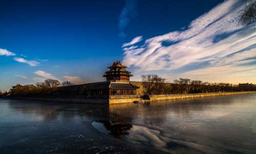
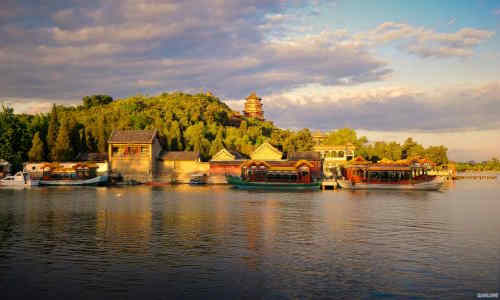
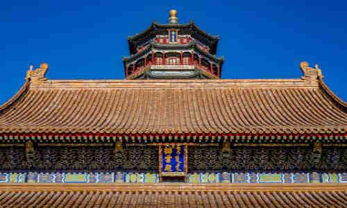

morly旅游圈
由万寿山和昆明湖组成，全园以西山群峰为背景，建筑群与山湖形势融为一体，景色变幻无穷。 全园分3个区域：以仁寿殿为中心的政治活动区；以玉澜堂、乐寿堂为主体的帝后生活区；以万寿山和昆明湖组成的风景旅游区。颐和园位于北京西北郊，主要由万寿山和昆明湖组成。早在元明时期，这里就以其优美自然的田园景色成为“壮观神州第一”的著名游览胜地。今之万寿山，元朝名瓮山，传说有一位老人在山上掘出一装满宝物的石瓮而得名。山前有湖名瓮山泊。公元1292年（元朝至元二十九年），科学家郭守敬开挖通慧河，将昌平及西山一带泉水汇引湖内，注入宫墙，接济漕运，瓮山泊始成为调济京城用水的蓄水库。由此至明，环湖先后建有多座颇具影响的寺观，其中尤以湖西北岸的“大承天护圣寺”规模最巨，楼宇恢弘，汉白玉钓台延入湖中，元朝皇帝常至此泛舟游幸，捕鱼垂钓。 明朝时，瓮山泊改称西湖，“环湖十里，为一郡之胜地”。每年桃红柳绿时，京城百姓扶老携幼，争往西湖踏青赏春，名曰：“耍西湖景”。时人尚有“西湖十寺”与“西湖十景”之誉。
【主要景区】
东宫门区： 在颐和园最东边。这一带原是清朝皇帝从事政治活动和生活起居的地方，包括朝见大臣的仁寿殿和南北朝房、寝宫、大戏台、庭院等。仁寿殿东宫门现在是颐和园的正门，它坐西朝东，门楣檐下全部用油彩描绘着绚丽的图案。六扇朱红色大门上嵌着整齐的黄色门钉，中间檐下挂着九龙金字大匾，上书“颐和园”三个大字，为光绪皇帝御笔亲题。门前御道丹陛上的云龙石雕刻着二龙戏珠，为乾隆年代所刻，是从圆明园废墟（安佑宫）上移来的，它是皇帝尊严的象征。东宫门当年只供清朝帝后出入。
仁寿殿：在颐和园大门东宫门内。是慈禧太后和光绪皇帝坐朝听政、会见外宾的大殿。原名勤政殿，光绪时重建，改称仁寿殿。东向，面阔七间，两侧有南北配殿，前有仁寿门，门外为南北九卿房，所陈的铜龙、铜凤、铜鼎等，雕制均极精美。
乐寿堂 ：是颐和园居住生活区中的主建筑，原建于乾隆十五年（公元1750年），咸丰十年（公元1860年）被毁，光绪十三年（公元1887年）建。乐寿堂面临昆明湖，背倚万寿山，东达仁寿殿，西接长廊，是园内位置最好的居住和游乐的地方。，堂前有慈禧乘船的码头“乐寿堂”黑底金字横匾为光绪手书。庭院中栽植玉兰、西府海棠、牡丹等名贵花木，取“玉堂富贵”之意。乐寿堂殿内设宝座、御案、掌扇及玻璃屏风。座旁有两只盛水果闻香味用的青龙花大磁盘，四只烧檀香用的九桃大铜炉。西套间为卧室，东套间为更衣室。室内紫檀大衣柜为乾隆时遗物。乐寿堂庭院内陈列着铜鹿、铜鹤和铜花瓶，取意为“六合太平”。院内花卉植有玉兰、海棠、牡丹等，名花满院，寓“玉堂富贵”之意。这里的玉兰花很有名，现在邀月门前一株是乾隆从南方移植来的。
玉澜堂：玉澜堂在仁寿殿西南临昆明湖畔而建，是一座三合院式的建筑。正殿玉澜堂坐北朝南，东配殿霞芬室，西配殿藕香榭。东殿可到仁寿殿，西殿可到湖畔码头，正殿后门直对宜芸馆。后檐及两配殿均砌砖墙与外界隔绝，是颐和园中一处重要的历史遗迹。光绪二十四年（1898年），慈禧发动宫廷政变后，曾把主张变法的光绪皇帝囚禁于此。是光绪皇帝的寝宫
大戏楼：在德和园内，与承德避暑山庄里的清音阁、紫禁城内的畅音阁，合称清代三大戏台。德和园大戏楼是为慈禧60岁生日修建，专供慈禧看戏。高21米，在颐和园中仅次于最高的佛香阁。戏楼共三层，后台化妆楼二层。顶板上有七个“天井”，地板中有“地井”。舞台底部有水井和五个方池。演神鬼戏时，可从“天”而降，也可从“地”而出，还可引水上台。
昆明湖：是颐和园的主要湖泊，占全园面积的四分之三，约220公顷。南部的前湖区碧波荡漾，烟波淼淼，西望起伏、北望楼阁成群；湖中有一道西堤，堤上桃柳成行；十七孔桥横卧湖上，湖中3岛上也有形式各异的古典建筑。
万寿山前景区：景区由两条垂直对衬的轴线统领，东西轴线是长廊，南北轴线从长廊中部起，依次为排云门、二宫门、排云殿、德辉殿、佛香阁、直至山顶的智慧海。万寿山原名金山、瓮山，海拔109米，南依昆明湖，以佛香阁为中心，形成了一组气势雄伟、巍峨壮观的建筑群。东侧有“转轮藏”和“万寿山和昆明湖”的石碑，西侧有五方阁和宝云阁。登临山顶，可俯看昆明湖景色。
佛香阁：位于在万寿山前山中央部位的山腰，建筑在一个高21米的方形台基上，是一座八面三层四重檐的建筑；阁高41米，阁内有8根巨大铁梨木擎天柱，结构复杂，为古典建筑精品。原阁咸丰十年（1860年）被英法联军烧毁后，光绪十七年（1891年）花了78万两银子重建，光绪二十年（1894年）竣工，是颐和园里最大的工程。阁内供奉着“接引佛”，供皇室在此烧香。
排云殿：在万寿山前建筑的中心部位，原是乾隆为他母亲60寿辰而建的大报恩延寿寺，慈禧重建时改为排云殿，是慈禧在园内居住和过生日时接受朝拜的地方。“排云”二字取自郭璞诗神仙排云山，但见金银台”，比喻似在云雾缭绕的仙山琼阁中，神仙即将露面。从远处望去，排云殿与牌楼、排云门、金水桥、二宫门连成了层层升高的一条直线。排云殿这组建筑是颐和园最为壮观的建筑群体。
智慧海：是万寿山顶最高处一座宗教建筑，是一座完全由砖石砌成的无梁佛殿，由纵横相间的拱券结构组成。建筑外层全部用精美的黄、绿两色琉璃瓦装饰，上部用少量紫色、蓝色的琉璃瓦盖顶，整座建筑显得色彩鲜艳，富丽堂皇。尤以嵌于殿外壁面的千余尊琉璃佛更富特色。“智慧海”一词为佛教用语，本意是赞扬佛的智慧如海，佛法无边。该建筑虽极像木结构，但实际上没有一根木料，全部用石砖发券砌成的，没有枋檩承重，所以称为“无梁殿”。长廊又因殿内供奉了无量寿佛，所以也称它为“无量殿”。
长廊：长廊位于万寿山南麓，面向昆明湖，北依万寿山，东起邀月门，西止石丈亭，全长728米，共273间，是中国园林中最长的游廊，1992年被认定为世界上最长的长廊，列入“吉尼斯世界纪录”。廊上的每根枋梁上都有彩绘，共有图画14000余幅，内容包括山水风景、花鸟鱼虫、人物典故等。画中的人物画均取材于中国古典名著。
画中游：画中游是万寿山西部一组重要景点建筑。它依山而建，正面有一座两层的楼阁，左右各有一楼，名“爱山”、“借秋”。阁后立有一座石牌坊，牌坊后边的是“澄晖阁”。建筑之间有爬山廊。由于地处半山腰，建筑形式丰富多彩，楼、阁、廊分别建在不同的等高线上，青山翠柏中簇拥着一组由红、黄、蓝、绿琉璃瓦覆盖着的建筑群体，酷似一幅中国山水画。
听鹂馆：原是乾隆皇帝为其母看戏所建，内有两层的戏台，因古人常借黄鹂鸟的叫声比喻音乐的优美动听，故名之为“听鹂馆”。咸丰十年（1860年）遭英法联军焚毁，光绪时改建。在德和园大戏楼建成前，慈禧经常在这里看戏，宴饮。现在听鹂馆已成为专营宫廷菜式的餐厅，先后接待服务过上百位国家元首和政府首脑，听鹂馆饭庄是著名的宫廷菜系饭庄。
铜亭（宝云阁）：铜亭是中国目前尚存的工艺最精致、体量最大的铜铸品之一。建在佛香阁西侧的五方阁院中一座高4米的汉白玉石座上始建于乾隆年间，高7.5米，重207吨。四面有菱花扇。虽为铜制，但完全按照木构架结构而做。东、南、西三面有门，门为四扇格扇门，北面是八扇格扇窗。门窗格扇均有菱花格扇心，帘架上部也有格扇心，所有格扇心均为内外二层。
文昌阁：文昌阁在颐和国昆明湖东堤北端。原是一座城关，为清漪园的园门之一。建于清乾隆十五年（1750年），现存城楼为光绪时（1875-1908）重建。城头四隅角廊平面呈"人"字形，中间为三层楼阁。中层供奉文昌帝君铜铸像及仙童塑像，旁有铜骡一个，极富特色。 文昌院位于文昌阁之东，文昌院博物馆是中国古典园林中规模最大、品级最高的文物陈列馆。 馆内设有六个专题展厅，品类涉及铜器、玉器、瓷器、金银器、竹木牙角器、漆器、家具、书画、古籍、珐琅、钟表、杂项等，类。由于颐和园特定的皇家环境，这些艺术品代表了当时最好的工艺水平，许多珍品在当时即为国之重器；馆中还陈展了部分清代宫廷生活用品。
后山后湖景区：位于颐和园最北部，建筑较少，林木葱笼，山路曲折，优雅恬静，与前山的华丽形成鲜明对比。一组西藏建筑和江南水乡特色的苏州街，布局紧凑，各有妙趣。
四大部州：四大部州在万寿山后山中部，是汉藏式的建筑群。占地2万平方米，因山顺势，就地起阁。前有须弥灵境（现改为平台），两侧有3米高的经幢，后有寺庙群主体建筑香岩宗印之阁。四周是象征佛教世界的四大部洲－---东胜身洲、西牛货洲、南赡部洲、北俱卢洲和用不同形式的塔台修建成的八小部洲。南、西南、东北、西北还有代表佛经“四智”的红、白、黑、绿四座喇嘛塔。塔上有十三层环状“相轮”，表示佛经“十三天”。塔型别致，造型端庄美观。四大部洲和八小部洲中间有两个凹凸不平的台殿，一个代表月台，一个代表日台，象征着日月环绕佛身谐趣园。
谐趣园：谐趣园在万寿山东麓，是一个独立成区、具有南方园林风格的园中之园。清漪园时名叫惠山园”，是仿无锡惠山寄畅园而建。嘉庆十六年（1811年）重修后，取“以物外之静趣，谐寸田之中和”和乾隆皇帝的诗句“一亭一径，足谐奇趣”的意思，改名为“谐趣园”。园内共有亭、台、堂、榭十三处，并用百间游廊和五座形式不同的桥相沟通。园内东南角有一石桥，桥头石坊上有乾隆题写的“知鱼桥”三字额，是引用了庄子和惠子在“秋水濠上”的争论而来的。
苏州街：是后湖两岸仿江南水镇而建的买卖街。清漪园时期岸上有各式店铺，如玉器古玩店、绸缎店、点心铺、茶楼、金银首饰楼等。店铺中的店员都是太监、宫女妆扮。皇帝游幸时开始“营业”。后湖岸边的数十处店铺1860年被列强焚毁。现在的景观为1986年重修。
交通:
到达西宫门：乘469、539路在颐和园西门站下，即可到达
到达北宫门：乘地铁4号线北宫门站D口出，或乘303、330、384、563、特10路在颐和园北宫门站下，即可到达
到达东宫门：乘地铁4号线西苑站C2口出，或乘209、330、331、332、346、696、718路在颐和园站下，即可到达
到达新建宫门：74、374、437、952路在颐和园新建宫门站下 ，即可到达
门票:
普通票:30人民币；公园+园中园:60人民币 (4月1日-10月31日 周一-周日)
普通票:20人民币；公园+园中园:50人民币 (11月1日-次年3月31日 周一-周日)
开放时间:
06:30-18:00,08:30-17:00(园中园) (4月1日-10月31日 周一-周日)
07:00-17:00,09:00-16:00(园中园) (11月1日-次年3月31日 周一-周日)
内容整理至网络，如有侵权，请联系我们！1255394075@qq.com
  